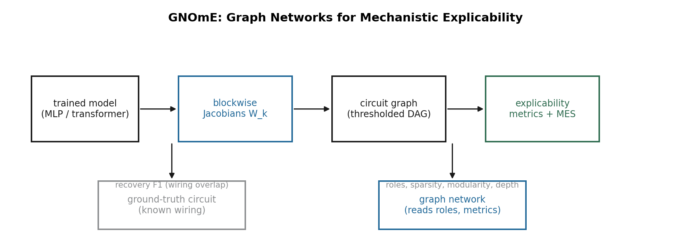
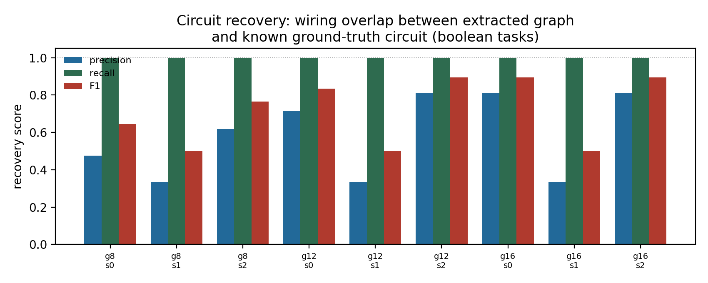
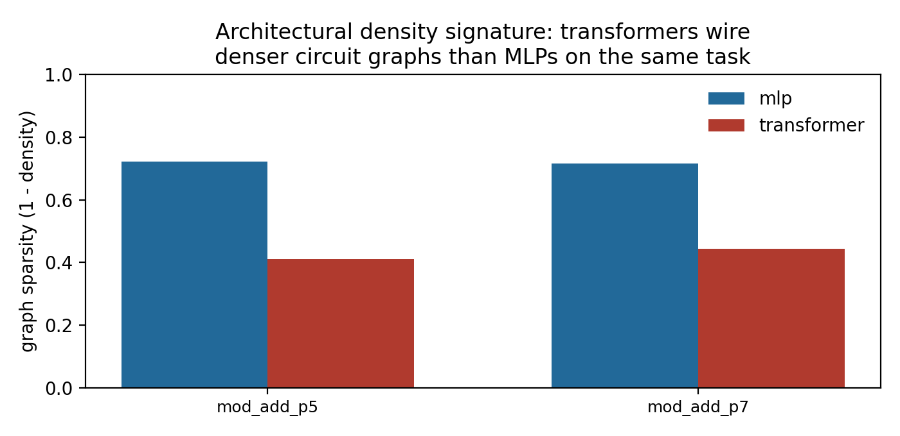
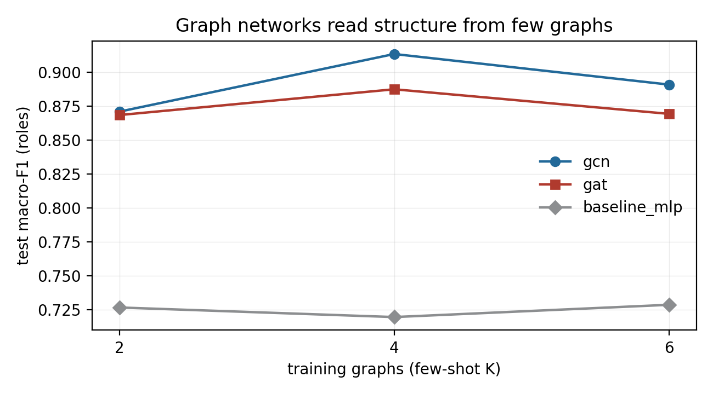
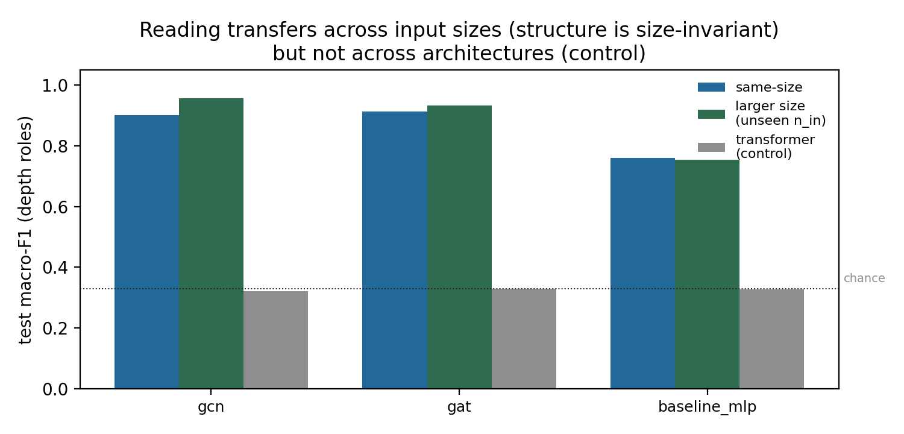

Mechanistic interpretability asks what a trained network computes, but most readouts answer with proxies — attention weights, saliency maps, activation patches — one step removed from the computation itself. GNOmE makes the obvious move: a model's computation is a graph, and the weights already determine it. Extract. From a trained MLP or transformer, build the circuit graph — one node per unit, edges weighted by the blockwise mean-absolute Jacobian 𝔼x|∂uk+1/∂uk|, thresholded into a layered DAG. Every edge is a real derivative, not a heuristic. Extraction costs ≈1.4% of training time. Measure. Score the graph with ground-truth-free explicability metrics (sparsity, modularity, effective depth, bottleneck, role diversity) and a composite Mechanistic Explicability Score; where the true circuit is known by construction, compute circuit recovery: trained boolean models recover their target circuits' input-pair wiring with recall 1.00 in 9/9 models (F1 0.50–0.90), and architectures separate cleanly — MLP sparsity 0.71 vs transformer 0.43, role diversity 2.3×. Read. A graph network infers unit depth-roles from structure alone — no positional features — at 0.91–0.96 macro-F1 vs 0.72–0.76 for a feature-only baseline, and the reading transfers to input sizes never seen during training. And the framework's testability pays off at the boundary: the reading is architecture-specific (chance across architectures for every readout), and semantic recovery is not readable from structure by any method. Mechanistic explicability is a graph problem; GNOmE makes it measurable and learnable.
Every mechanistic-interpretability question is a question about a computation graph: which inputs does this unit depend on, how deep is the wiring, where are the bottlenecks, what roles do units play. GNOmE's claim is that once you have the graph — extracted from derivatives, not heuristics — both measurement (metrics) and reading (graph networks) become possible, and both are testable against ground-truth circuits that are known by construction.
W_k[i, j] = E_x | ∂u_{k+1}[i] / ∂u_k[j] | — blockwise mean-abs Jacobian
edges kept iff W_k[i, j] ≥ rel_thresh × mean(W_k > 0) — per-layer relative threshold
a trained model is differentiated blockwise, thresholded into a circuit DAG, scored, and read by graph networks.

every trained boolean model's circuit graph contains its target circuit's full input-pair wiring; F1 is bounded only by redundant wiring.

on the same modular-arithmetic task, MLPs wire sparser circuit graphs than transformers — an architectural density signature.
The pipeline in miniature: a layered computation graph with Jacobian-weighted edges. Drag the threshold — below it, edges are not computational paths. The density readout is sparsity, one of the explicability metrics.
Five properties of the extracted graph, each computable with no ground truth, each higher = more explicable: sparsity (fraction of possible edges absent), modularity (community structure), effective depth (longest path), bottleneck (narrowest cut), role diversity (distinct in/out-degree signatures). They combine into a single Mechanistic Explicability Score (0.4 recovery + 0.2 sparsity + 0.2 modularity + 0.2 depth fidelity).
The harder question is what is a unit for — a question about roles that structure alone should answer. GNOmE trains pure-PyTorch GCN/GAT readouts to predict a node's depth bin (input / early / mid / late / output) from the circuit graph, with node features deliberately restricted to degree and edge-weight statistics: no layer index, no positional feature, so depth must be computed by message passing. A feature-only MLP sees the same features with no edges.

depth roles read from structure alone, few-shot: message passing computes a multi-hop quantity that flat features cannot.

the reading is size-invariant (structure) — and architecture-specific (control): every readout hits chance on transformers.
We probed one further question: can a graph readout predict recovery — how much of an unseen target circuit a model learned — from structure alone? Across boolean graphs spanning input counts, gate counts, widths, and trained/untrained weights (recovery F1 0.40–0.95), every readout failed identically (test R² < 0), and the feature-only baseline's identical failure shows the barrier is informational, not architectural: recovery is a statement about a target the extractor never sees, so no function of the extracted graph alone can certify it. This is the boundary that makes the positive results meaningful: graph readouts infer structural explicability and generalize it across sizes; semantic content requires comparing against the specification.
| experiment | measure | graph readout / GNOmE | feature-only / baseline | takeaway |
|---|---|---|---|---|
| circuit recovery boolean tasks, 9 models | recall of input-pair wiring | 1.00 in 9/9 | — | trained models contain the wiring of the circuits they compute (F1 0.50–0.90, precision 0.33–0.81) |
| architectural signature modular arithmetic | graph sparsity | MLP 0.72 | transformer 0.41 | transformers wire ~2× denser circuit graphs; role diversity 2.3× higher |
| few-shot depth reading K=4 graphs, no positional features | macro-F1 | 0.913 (GCN) | 0.720 | depth is multi-hop; message passing computes it, flat features cannot |
| size transfer train 7 inputs → test 9 (unseen) | macro-F1 | 0.957 (GCN) | 0.755 | structure is size-invariant; degree statistics are not |
| cross-architecture control MLP → transformer graphs | macro-F1 | 0.32 (chance) | 0.33 (chance) | structural reading is architecture-specific |
| recovery from structure | test R² | < 0 | < 0 | semantic content is not readable from the graph by any method |
git clone https://github.com/sehajr-singhs/gnome cd gnome pip install -r requirements.txt # torch, numpy, networkx, matplotlib # everything below runs on CPU in ~8 minutes; numbers land in results/*.json python benchmarks/run_benchmark.py --out results/benchmark_cpu.json python benchmarks/run_gnn_experiment.py --out results/gnn_experiment.json python benchmarks/analyze.py # paper numbers from committed JSONs python benchmarks/make_figures.py # figs/*.png # papers cd manuscript && pdflatex paper && bibtex paper && pdflatex paper && pdflatex paper cd manuscript && pdflatex paper_ieee && bibtex paper_ieee && pdflatex paper_ieee && pdflatex paper_ieee
Attention maps, saliency, and patching-based circuits all try to answer graph questions — which paths, which dependencies, which modules — with non-graph instruments. GNOmE extracts the computation as a graph from real derivatives, and in doing so converts mechanistic interpretability from a collection of heuristics into a measurable, learnable, testable object of study. The graph is not a metaphor for the computation. It is the computation.
Honesty notes: all numbers come from the committed scripts and result JSONs (CPU, PyTorch 2.10); recovery is functional (input-pair co-wiring), not per-parameter identity; extraction thresholds are per-layer relative; the GNN experiments remove positional features so the signal is structure; negative results are reported as results.